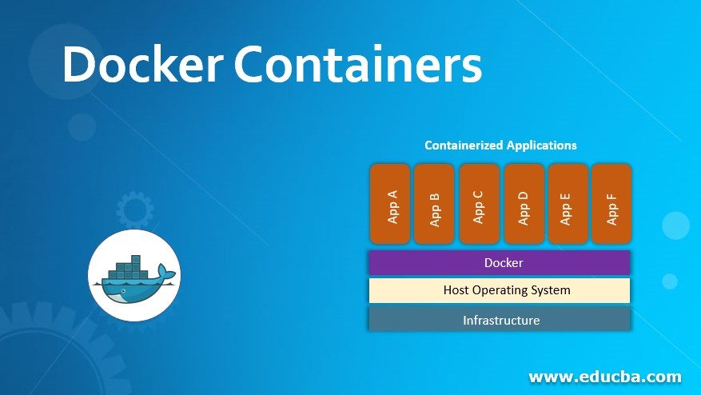

<!DOCTYPE html>
<html lang="en">
<head>
    <meta charset="UTF-8">
    <meta http-equiv="X-UA-Compatible" content="IE=edge">
    <meta name="viewport" content="width=device-width, initial-scale=1.0">
    <title>Ngulix_Linux</title>
    <link rel="stylesheet" href="asset/css/bootstrap.min.css">
    <link rel="stylesheet" href="asset/css/main.css">
  <header class="navbar sticky-top navbar-expand-lg navbar-dark main-nav">
      <div class="container">
        <a class="navbar-brand" href="index.html">
            </a>
            </a>
        <button class="navbar-toggler" type="button" data-bs-toggle="collapse" data-bs-target="#navbarNavAltMarkup" aria-controls="navbarNavAltMarkup" aria-expanded="false" aria-label="Toggle navigation">
          <span class="navbar-toggler-icon"></span>
        </button>
        <div class="collapse navbar-collapse" id="navbarNavAltMarkup">
          <div class="navbar-nav ms-auto py-3">
            <a class="nav-link px-3" aria-current="page" href="index.html">Home</a>
            <a class="nav-link px-3" href="tutor.html">VIDEO TUTOR</a>
            <a class="nav-link px-3" href="service.html">SERVICE</a>
            <a class="nav-link px-3" href="linux.html">LINUX</a>
            <a class="nav-link px-3" href="dpk-utama.html">DPK</a>
            <a class="nav-link px-3" href="iot.html">IOT</a>
            <a class="nav-link active px-3" href="docker.html">DOCKER</a>
            <a class="nav-link px-3" href="soft.html">SOFTWARE</a>
            <a class="nav-link px-3" href="ekskul.html">EKSKUL</a>
            <a class="nav-link px-3" href="ABSEN.html">ABSEN & NILAI</a>
          </div>
        </div>
      </div>
  </header>
  <footer>
    <div class="main-footer-menu main-biru py-5">
      <div class="containe">
        <div class="row">
          <div class="col-lg-3 mb-3">
            <div class="mb3">
              <a href="index.html"></a>
            </div>
            <p class="px-4">Belajar sampai akhir hayat</p>
          </div>
          <div class="col-lg-3 mb-3">
            <h3>UBUNTU 20.04</h3>
            <ul>
              <li><a href="https://docs.google.com/document/d/1AjNV6Fy8ObNNORHhnxwL9PGpBFtnNkDs/edit?usp=share_link&ouid=102351941694811625086&rtpof=true&sd=true" target="_blank">Install Ubuntu 20.04</a></li>
              <li><a href="https://docs.google.com/document/d/1qQu6jZXKg2IS1EYMnELkLZlm1t4K8VXI/edit?usp=share_link&ouid=102351941694811625086&rtpof=true&sd=true" target="_blank">Konfigurasi 2 Network</a></li>
              <li><a href="https://docs.google.com/document/d/1xlSw3NgfXiho2cDdY6r-5Dgdh0RDABtx/edit?usp=share_link&ouid=102351941694811625086&rtpof=true&sd=true" target="_blank">Konfigurasi DHCP Server</a></li>
              <li><a href="https://docs.google.com/document/d/1xOluzsfpk7TzymsoVd_ojR1ymS8-BzcP/edit?usp=share_link&ouid=102351941694811625086&rtpof=true&sd=true" target="_blank">Konfigurasi DNS Server</a></li>
              <li><a href="https://docs.google.com/document/d/1AkwHWFP48zyubEi4pDJvzrKD0EKuSqE2/edit?usp=share_link&ouid=102351941694811625086&rtpof=true&sd=true" target="_blank">Network di Ubuntu</a></li>
              <li><a href="" target="_blank">Konfigurasi Squirrel Mail Server</a></li>
              <li><a href="" target="_blank">Konfigurasi Roundcube Server</a></li>
              <li><a href="https://docs.google.com/document/d/1yyqtM9A6bSFM3Y6VGww04RkN0E5v5Pwx/edit?usp=drive_link&ouid=102351941694811625086&rtpof=true&sd=true" target="_blank">Konfigurasi PhpMyadmin Server</a></li>
              <li><a href="https://docs.google.com/document/d/1kSp9V1Mpg0mImt1LkLwMDklCVv-rFL65/edit?usp=drive_link&ouid=102351941694811625086&rtpof=true&sd=true" target="_blank">Konfigurasi Remote Server</a></li>
              <li><a href="https://docs.google.com/document/d/1zSut5zU9S2cy-He0QzyJktmPwhqmwpEi/edit?usp=drive_link&ouid=102351941694811625086&rtpof=true&sd=true" target="_blank">Konfigurasi FTP Server</a></li>
              <li><a href="https://docs.google.com/document/d/1n3zZIWQwpOxYAdaJv194q42j0Bl1RAAI/edit?usp=drive_link&ouid=102351941694811625086&rtpof=true&sd=true" target="_blank">Konfigurasi NFS Server</a></li>
              <li><a href="" target="_blank">Konfigurasi Samba Server</a></li>
              </ul>
          </div>
          <div class="col-lg-3 mb-3">
            <h3>Materi AUTOMATIONS</h3>
            <ul>
               <a href="" class="btn btn-warning">DOCKER</a>
              <li><a href="https://docs.google.com/document/d/1AkwHWFP48zyubEi4pDJvzrKD0EKuSqE2/edit?usp=share_link&ouid=102351941694811625086&rtpof=true&sd=true" target="_blank">SETING NETWORK UBUNTU</a></li> 
              <li><a href="https://docs.google.com/document/d/1-N_Q3aQTi05QAuGltcWZ1mldpTVhF6XO/edit?usp=share_link&ouid=102351941694811625086&rtpof=true&sd=true" target="_blank">Install Docker di Ubuntu</a></li>
              <li><a href="https://docs.google.com/document/d/1VSgvTBQGJwaomuPpnLmN_zasvFD0G-ZU/edit?usp=share_link&ouid=102351941694811625086&rtpof=true&sd=true" target="_blank">Create Container-1</a></li>
              <li><a href="https://docs.google.com/document/d/1VSgvTBQGJwaomuPpnLmN_zasvFD0G-ZU/edit?usp=share_link&ouid=102351941694811625086&rtpof=true&sd=true" target="_blank">Membuat Container-2</a></li>  
              <li><a href="https://docs.google.com/document/d/1CMuV18kg_yHWaMKe9igRwYlmZzxVHabR/edit?usp=share_link&ouid=102351941694811625086&rtpof=true&sd=true" target="_blank">PORT FORWARDING / PUBLISH</a></li>
              <li><a href="https://docs.google.com/document/d/1KI9rmF3PCrcIIYLHlCRELCCfS8Fuh8kO/edit?usp=share_link&ouid=102351941694811625086&rtpof=true&sd=true" target="_blank">INSTALL PORTAINER</a></li>
              <li><a href="https://docs.google.com/document/d/1EDWZb77frW_q-O03cxriSw5Lzc6g2Kfn/edit?usp=share_link&ouid=102351941694811625086&rtpof=true&sd=true" target="_blank">PRAKTEK ANSIBLE</a></li>
              <li><a href="https://docs.google.com/document/d/1pqdmIAl-aPPkIrzHT2mz_72cafqVcUg_/edit?usp=share_link&ouid=102351941694811625086&rtpof=true&sd=true" target="_blank">PLAYBOOK</a></li>
               <li><a href="https://docs.google.com/document/d/196ytr6uKkAu0t3I_Gh4I-2S8-IayprvP/edit?usp=drive_link&ouid=102351941694811625086&rtpof=true&sd=true" target="_blank">PERINTAH DASAR DOCKER</a></li>
               <li><a href="https://docs.google.com/document/d/1EDWZb77frW_q-O03cxriSw5Lzc6g2Kfn/edit?usp=drive_link&ouid=102351941694811625086&rtpof=true&sd=true" target="_blank">ANSIBLE</a></li>    
              <li><a href="https://docs.google.com/document/d/1lhlS4cEJNiOXuIfYlCjuHom3fLxKkQgn/edit?usp=drive_link&ouid=102351941694811625086&rtpof=true&sd=true" target="_blank">Troubleshot Docker</a></li>
              </ul>
          </div>
          <div class="col-lg-3 mb-3">
            <h3>VIDEO PEMBELAJARAN DOCKER</h3>
            <ul>
              <li><a href="https://drive.google.com/file/d/1er_fidlMxENH-HsewtAsqW-Q9pWD6n04/view?usp=drive_link" target="_blank">1. Apa itu Docker Belajar Docker untuk Pemula</a></li>
              <li><a href="https://drive.google.com/file/d/1T3EgQiSd7LDCZGxwwJFet9fUG5Z1LWst/view?usp=drive_link" target="_blank">2. Apa itu sebuah container_ Demo Docker _ Belajar Docker untuk Pemula</a></li>
              <li><a href="https://drive.google.com/file/d/1QYZpZ1vsfXKUYyHtq5USYldc17qrho09/view?usp=drive_link" target="_blank">3. Cara Menginstal Docker di MacOS, Windows, Linux</a></li>
              <li><a href="https://drive.google.com/file/d/15JR0cnZWkeqFlyl4SHioZQWs56vPbYI-/view?usp=drive_link" target="_blank">4. 8 Perintah Dasar Docker</a></li>
              <li><a href="https://drive.google.com/file/d/14RqCCEHZyojVEAAFJApG4rJePjfpNatA/view?usp=drive_link" target="_blank">5. Cara Troubleshooting Docker Container</a></li>
              <li><a href="https://drive.google.com/file/d/1xGzw74W6l4C9CTphtkNujg-xA4EoPpJw/view?usp=drive_link" target="_blank">6. Bedanya Docker vs Virtual Machine</a></li>
              <li><a href="https://drive.google.com/file/d/1IR6fA8nrhuaClDfFynqFyisvi3WMKZHh/view?usp=drive_link" target="_blank">7.  Alur Pembuatan Aplikasi dengan Docker di Dunia Profesional</a></li>
              <li><a href="https://drive.google.com/file/d/1nQPM5qkdACOh2s5K9Y-x395uJqcORTtz/view?usp=drive_link" target="_blank">8. Mengembangkan Aplikasi Web Javascript dan Golang dengan Docker</a></li>
              <li><a href="https://drive.google.com/file/d/1hNX7pm8_D6fwRZeAz2r4SUgwgJcEjHSg/view?usp=drive_link" target="_blank">9. Tutorial Menulis Dockerfile - Membuat Docker Image App Javascript</a></li>
              <li><a href="https://drive.google.com/file/d/1Vb8dOoTBejz5EOl2uMa-Vqgayw78jyeW/view?usp=drive_link" target="_blank">10. Tutorial Menulis Dockerfile - Membuat Docker Image App Golang</a></li>
              <li><a href="https://drive.google.com/file/d/1KXGM23nq6VO_nxl6xmClR-q-i0n71B50/view?usp=drive_link" target="_blank">11. Tutorial Docker Compose</a></li>
              <li><a href="https://drive.google.com/file/d/1iwjsU1TnWpMDevNu9eA8umzI2N7j6eMf/view?usp=drive_link" target="_blank">12. Upload Image ke Docker Container Registri</a></li>
            </ul>
          </div>
        </div>
      </div>
    </div>
    <div class="text-center py-2 main-footer-copyright">Copyright @lan 2021. All Rights Reserved</div>
  </footer>
   <script src="asset/js/bootstrap.bundle.min.js"></script>
   <script src="asset/js/jquery-3.6.0.min.js"></script>
   <script src="asset/js/main.js"></script>
</body>
</html>
